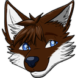

About Me
Generally...
My name is Jaidan Escott, I'm a 19 year old (furry) guy that lives around Perth, Western Australia.
I'm known for doing things in relation to computers and programming. I can be referred to as "that tech fox", however, call me whatever you like.
If you just stumbled upon this website by any chance, hi! It's good to see stalkers around here... Just kidding, I like the fact you're spending your time to read this.
I recently wrote this "About Me" section to expand on the home page, if you're interested at all. It's probably lacking some information you might be after too, who knows.
What do I do?
Simple really, I work with computers both hardware and software. I love playing video games especially, though I've mostly ever played Sandbox style games.
I've taken time to learn HTML & CSS, C#, Java, PHP and Lua. Some are learned through Perth's South Metropolitan TAFE, while others are from my own time.
I do wish to work on learning more such as C/C++ and Python. These will probably come by later in the future.
Yes, I'm a furry.
Oh so controversial, I know.
My main fursona is a fox, which has an odd colour scheme which resembles the likes of milk & white chocolate. Perhaps this is why I've been nicknamed the "Chocolate Fox"?
You can find my fursona information in the fursona page if you really want to see him.
Anyway, if you wish to hate me for being a furry that's your problem and you don't need to escalate anything further.
I'm an average social.
Now, you're probably thinking "what the heck is an average social?" and well, I'm thinking the same thing honestly...
Really I'm not too boring nor too interesting, I'm a rather plain person. That's what I'm trying to get at here.
My online contacts...
...are all available on the top-right corner. Message me on Steam, Discord and/or Telegram!